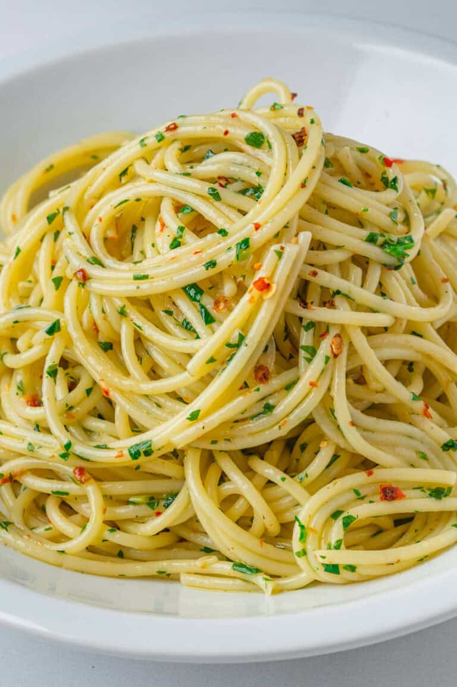

Aglio E Olio

Description
A simple, traditional, classic Italian pasta dish that offers a rich, nutty, and slightly sweet garlic flavor. The garlic is slowly and gently toasted to golden perfection in high-quality extra virgin olive oil. This infused oil, when emulsified with starchy, salty pasta water, formas a light, glossy, and savory sauce that perfectly coats the noodles.
Ingredients
- Spaghetti Pasta
- Extra virgin olive oil (Olio)
- Garlic cloves (Aglio)
- Red pepper flakes / fresh red chillies (Pepperoncino)
- Parsley
Instructions
- Cook pasta in a pot of heavily salted boiling water. Cook 80% of the way / approximately 2 minutes under package instructions.
- Whilst pasta is cooking, thinly slice the garlic and chop up the parsley.
- In a cold pan, add the olive oil, garlic, and red pepper flakes.
- Then place pan on the stove top over the low heat.
- When the garlic starts to slowly sizzle, add in the parsley.
- Add a ladle of the pasta cooking water and stir together.
- Add pasta to the pan with another splash of pasta water. Stir continously for 2-3 minutes to emulsify the sauce. Add pasta water slowly (only if needed).
- Its ready. Serve up your delicious spaghetti aglio e olio and enjoy!
Home